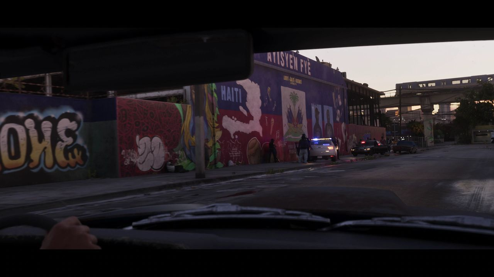
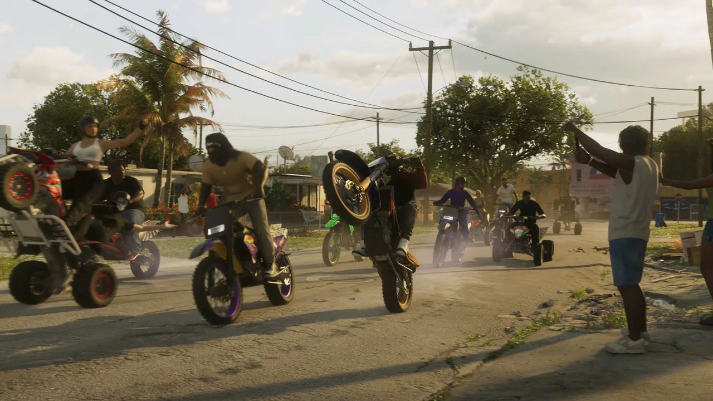
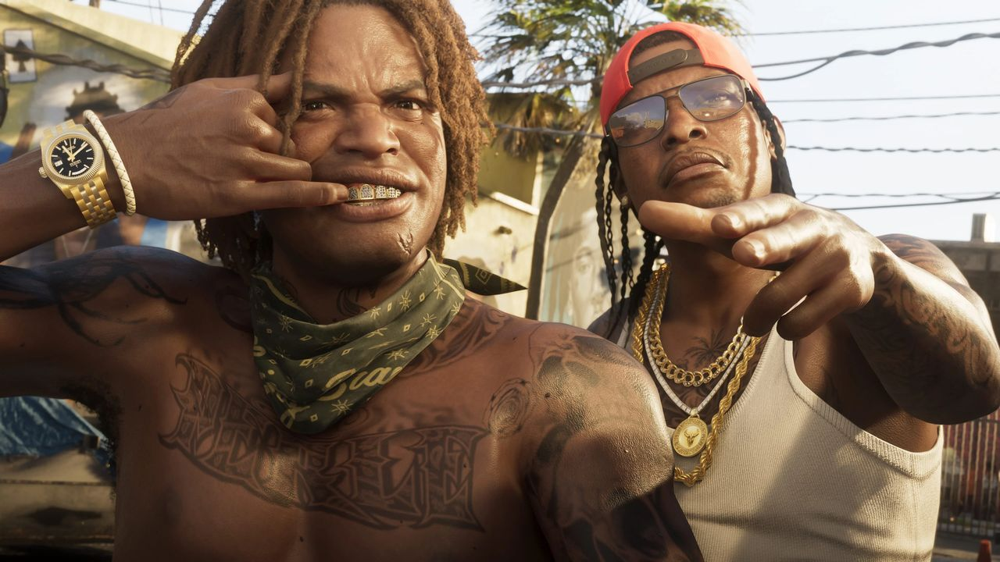
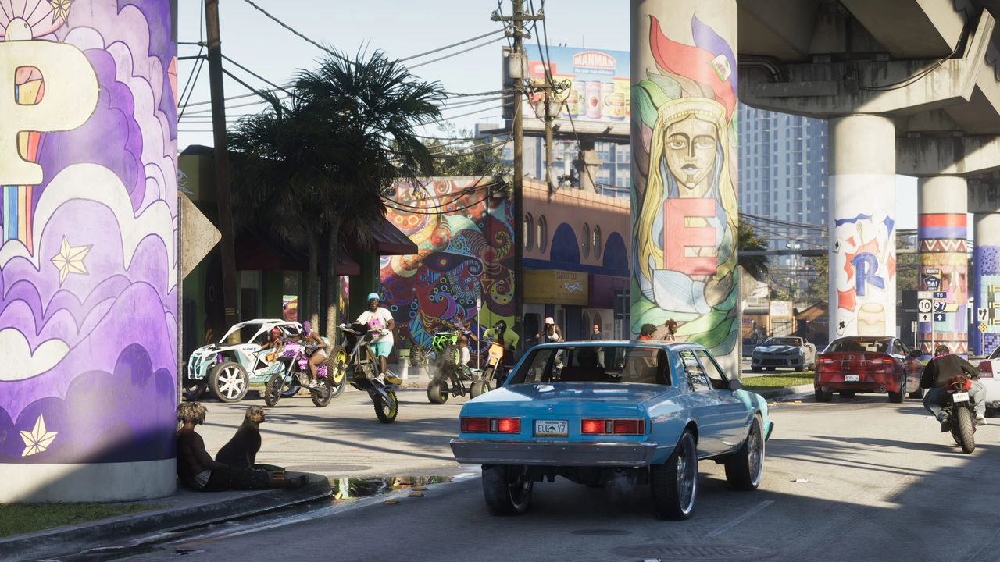

© Rockstar Games / Take-Two Interactive — image officielle de GTA VI (bande-annonce 2), via GTA Wiki.
La Perle
Fiabilité La Perle est apparue d'abord dans les fuites de septembre 2022 (non officiel), puis a été confirmée par les deux bandes-annonces et par le site officiel.
La Perle est un quartier de Vice City. C'est une enclave ethnique, peuplée principalement d'immigrés haïtiens, mais aussi de résidents venus d'autres pays des Caraïbes.
Galerie



© Rockstar Games / Take-Two Interactive — images officielles de GTA VI (bandes-annonces, captures, site officiel), via GTA Wiki.
Comment on la connaît
- Fuites de septembre 2022 (non officiel) : un clip montre Jason Duval qui s'introduit dans un garage automobile du quartier. Une fresque murale à thème haïtien, qui comporte la mention « S4SLIFE », orne un entrepôt abandonné en face, ce qui suggère la présence du gang San4San. Des menus de débogage citent aussi le nom du quartier.
- Bande-annonce 1 : des motards de cross roulent dans une rue résidentielle (1:05).
- Bande-annonce 2 : Jason passe devant la fresque de l'entrepôt, avec le nom du quartier bien visible en haut (ce qui confirme le nom). On y voit aussi une ligne de métro aérien au-dessus de la Vice-Dale County Road 561. Un tableau d'affichage mentionne le marché caribéen La Perle et le centre culturel haïtiano-américain (1:43).
- Site officiel : une capture montre deux gangsters devant le même garage que dans les fuites.
Lieux d'intérêt et commerces
- Le centre culturel haïtiano-américain
- Le marché caribéen La Perle
- Un garage automobile et un entrepôt abandonné (noms inconnus)
- Jeudy's Food Depot
- Simon's Tires
Inspiration réelle
Le quartier est directement inspiré de Little Haiti, à Miami. Son nom reprend le surnom que les colons français donnaient à Haïti, « la Perle des Antilles ».